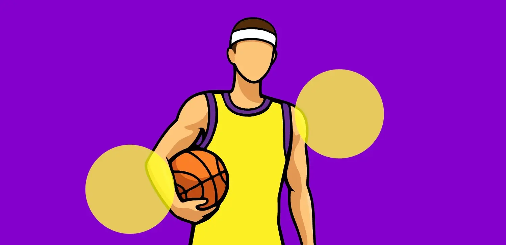
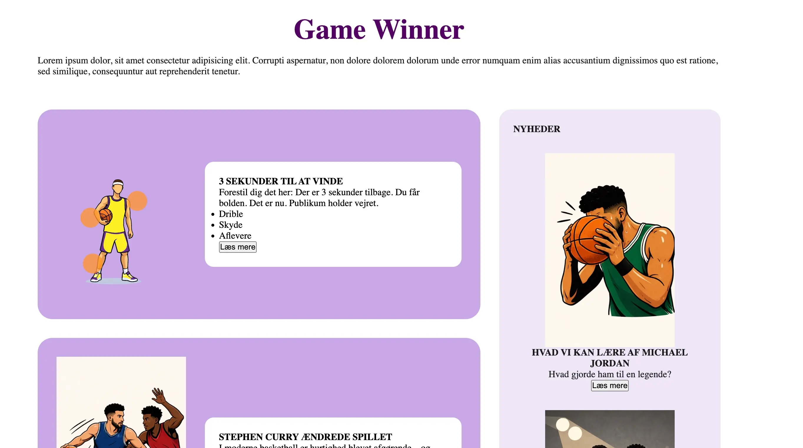
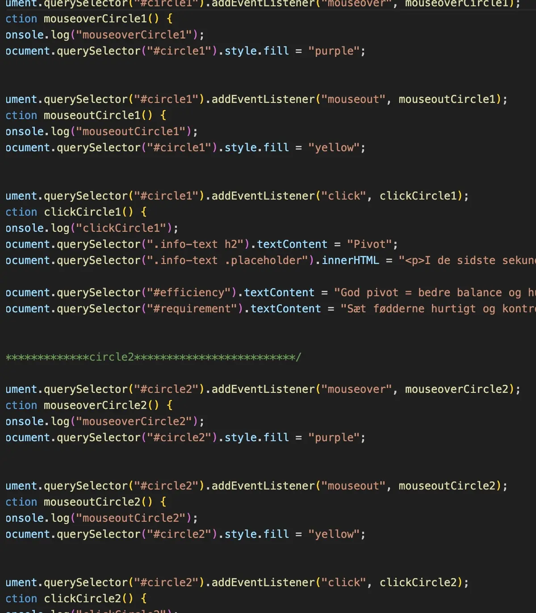
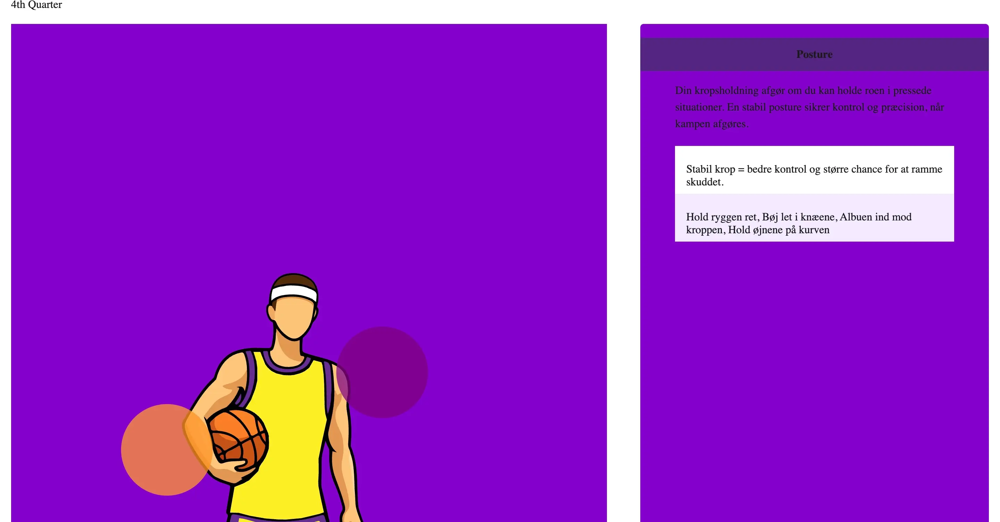
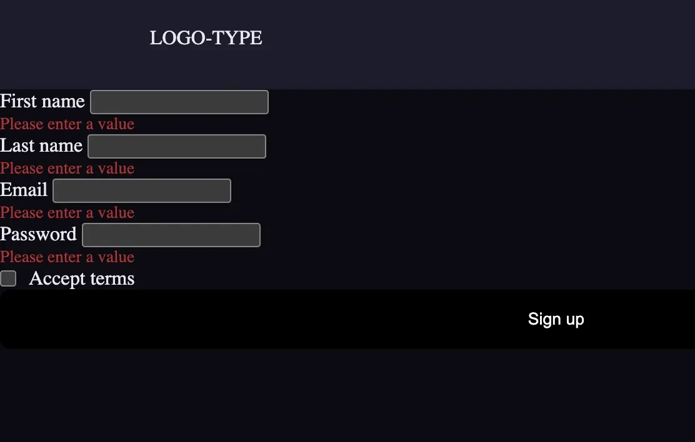

Grundlæggende brugergrænsefladeudvikling

Temaet
I Tema 4 arbejdede jeg med udvikling af brugergrænseflader og blev introduceret til JavaScript og Adobe Illustrator. Forløbet byggede videre på mine tidligere erfaringer med HTML, CSS og UX/UI, men med større fokus på interaktivitet og funktionalitet i websites.

Formålet
Formålet med projektet var at lære, hvordan design og kode kan kombineres for at skabe mere interaktive brugeroplevelser. Jeg arbejdede med JavaScript-funktioner, avanceret CSS og vektorgrafik i Illustrator for at gøre sitet mere levende og brugervenligt.

Process
Projektet begyndte med idéudvikling og skitsering af et visuelt koncept. Jeg designede selv grafik og illustrationer i Adobe Illustrator og arbejdede videre med moodboards, layoutskitser og styletiles. Under udviklingen lærte jeg at bruge JavaScript til funktioner som burger-menuer, hover-effekter, "læs mere"-sektioner og dynamisk indhold, der reagerede på brugerens handlinger

Løsning
Jeg udviklede et basketball-inspireret website med fokus på læring og interaktion. En af de centrale funktioner var en selvtegnet basketballspiller, hvor brugeren kunne holde musen over forskellige punkter på figuren og få vist information om skudteknik og spilforståelse. Derudover arbejdede jeg med formularer, interaktive elementer og forskellige JavaScript-funktioner, som gjorde oplevelsen mere engagerende.

Erfaring og refleksion
I dette tema fik jeg min første introduktion til JavaScript og lærte at udvikle interaktive funktioner som hover-effekter, "læs mere"-sektioner og brugerinteraktioner. Jeg arbejdede også med Adobe Illustrator til at skabe mine egne grafiske elementer og illustrationer, herunder den basketballfigur, som blev brugt som en interaktiv del af sitet. Projektet indeholdt desuden en formularløsning, som jeg på grund af private årsager ikke nåede at færdiggøre i det oprindelige projekt. Til denne portfolio har jeg dog udviklet en ny og færdig version, så projektet kan præsenteres mere komplet. Samlet set gav forløbet mig værdifuld erfaring med JavaScript, frontend-udvikling og udviklingen af mere dynamiske brugergrænseflader.